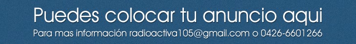

Contamos con una amplia variedad en géneros para que puedas disfrutar de una programación libre de interrupciones. Gracias por preferirnos! ;-)
Regalanos un like en Facebook. Clic aqui para ir RadioActiva105 FM en Facebook.
Mantente al tanto de nuestras actualizaciones a través de nuestra cuenta oficial en Twitter.
Mantente al tanto de nuestras actualizaciones a través de nuestra cuenta oficial en Twitter.


NOTICIAS

Los aviadores y Victor Drija en "Dame un beso"
Publicado el Publicado el 16-11-2014 a las 09:07 AM
Los Aviadores dio a conocer el videoclip de uno de sus últimos temas que suena fuerte en todas las radios de América Latina. La agrupación comenzó el año con el pie derecho y por ello decidió seguir apostando a “Dame un beso”...